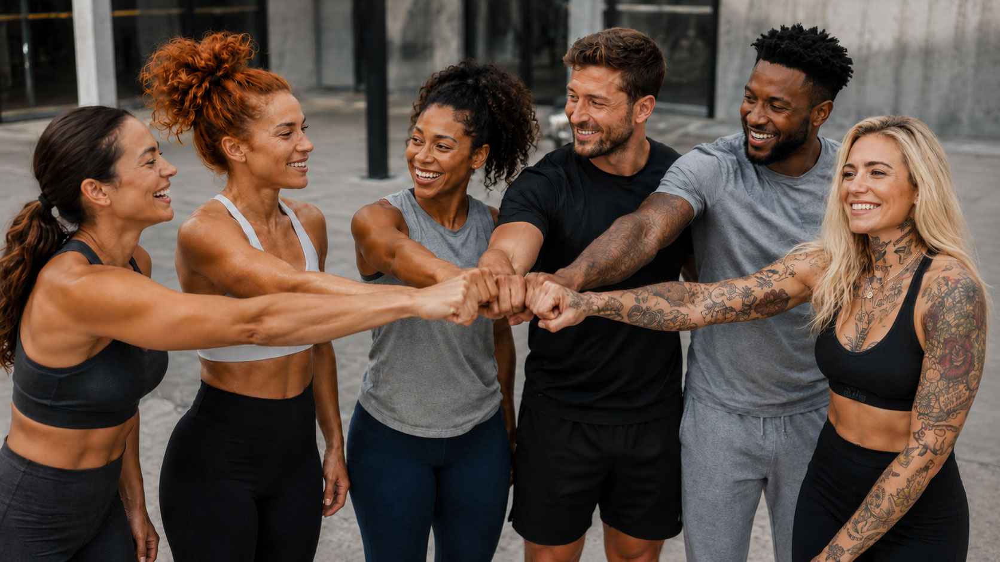

Microcredentials at a Crossroads: Unlock Skills, Create Markets, Change Lives
Microcredentials were meant to make education more flexible, practical and relevant. But in fitness and wellness, their real power is not just in recognising new skills. It is in helping qualified people turn those skills into work.
We Were Promised Flying Cars
Somewhere along the way, we were told the future would be full of frictionless everything. Robots, automation, smart systems, invisible payments, instant access, flying cars, probably a fridge that could book your Pilates class for you.
And yet, in most training rooms, someone is still reaching for a whiteboard marker.
I actually quite like that.
Because it reminds us that progress is not always about replacing people with technology. Sometimes it is about giving good people better tools.
That feels especially true in education.
The Challenge Facing Young People
Right now, the UK has a serious problem with young people not in education, employment or training.
More than one million young people are currently outside work, education or training, while employers continue to report skills shortages and growing demand for specialised talent.
So the problem is not ambition.
The problem is access.
People are being told to be skilled, confident, entrepreneurial, resilient and ready for work.
Then they are being handed a certificate and a fairly steep hill.
Microcredentials Are at a Crossroads
That is where the conversation around microcredentials gets interesting.
They were meant to make learning more flexible, more practical and more relevant. In many ways, they do.
They allow people to keep building skills without committing to years of study every time they want to develop. They help education providers respond quickly to changing market demands and allow professionals to demonstrate that their knowledge remains current.
But let's be honest.
A microcredential does not make someone a doctor. It does not make someone an architect. It does not replace the long, rigorous and regulated pathways that some professions require.
There are jobs where the gate should be high.
But there are also professions where opportunity is not being blocked by lack of talent. It is being blocked by lack of visibility, confidence, commercial infrastructure and routes to market.
Skills That Create Opportunity
A personal trainer is already a highly skilled professional.
So is a fitness instructor, Pilates teacher, yoga teacher, dance instructor, sports coach, therapist or wellness practitioner.
With the right CPD and specialist training, these professionals become even more valuable.
- Sports Nutrition
- Mobility Training
- Injury Prevention
- Strength Training
- Group Coaching
- Behaviour Change
- Older Adult Fitness
- Pre and Post-Natal Support
- Youth Activity
- Corporate Wellbeing
These are not just badges.
They are doors.
Every additional specialism creates a new opportunity to help a different audience, solve a different problem and create a new source of income.
From Qualification to Opportunity
A PT with mobility training is no longer just a PT.
They can help people move better, return to exercise after injury, reduce stiffness and regain confidence.
A coach with behaviour change training can help people stick to programmes, not just start them.
An instructor with older adult fitness expertise can serve a rapidly growing market of people who simply want to stay active, independent and healthy.
A dance teacher with youth activity training can support schools, community groups and holiday programmes.
A fitness professional with corporate wellbeing expertise can engage employers, teams and workplaces rather than relying solely on individual clients.
That is where microcredentials become powerful.
Not because they decorate a CV.
Because they help a skilled person answer a better question:
Who can I help now?
The Hard Part Starts After Qualification
For too long, qualification has been treated as the finish line.
In reality, for many learners, it is the beginning of the hard bit.
Education providers create standards. They build knowledge. They teach technique. They assess competence and provide credibility.
But once someone qualifies, the world does not automatically know they exist.
That newly qualified professional still needs to:
- Package their services
- Set prices
- Promote what they do
- Take bookings
- Collect payments
- Manage clients
- Build trust
- Stay visible
- Continue learning
And ideally, not burn out before they have properly started.
The Missing Piece: The Market
This is why the conversation about microcredentials cannot stop at the credential.
It has to include the market.
A microcredential in mobility training is useful.
A bookable mobility assessment for people returning to exercise is better.
A microcredential in sports nutrition is useful.
A paid workshop for beginner runners or local sports clubs is better.
A microcredential in group coaching is useful.
A six-week programme that people can discover, book and pay for is better.
A microcredential in youth activity is useful.
A school holiday camp, dance club or after-school confidence programme is better.
Skills create value.
Services create opportunity.
Technology Should Remove Friction
This is not about turning every learner into an influencer or startup founder.
It is about recognising the reality of modern work.
Many fitness and wellness professionals are effectively self-employed from day one.
They are expected to market themselves, generate demand, manage customers, handle bookings and run administration, often with very little support.
That is where technology should help.
Not by making things colder or more automated.
By taking the friction out of the boring bits so people can spend more time doing the human bits.
- The coaching.
- The teaching.
- The encouraging.
- The noticing.
- The adapting.
- The relationship-building.
The moments that genuinely change lives.
Why fibodo Exists
This is why we built fibodo.
Because if a learner completes a qualification, earns specialist CPD and develops valuable expertise, but has no simple way to package it, promote it, take bookings, process payments and deliver services, then only half the job has been done.
We have helped them become qualified.
We have not helped them become commercially visible.
That is the gap we want to help close.
Building Bridges, Not Just Badges
The UK does not simply need more qualifications sitting on LinkedIn profiles.
It needs more people using their skills in the real world.
- More local trainers helping people move.
- More instructors creating confidence.
- More coaches working in communities.
- More specialists supporting prevention.
- More young people seeing self-employment as practical rather than intimidating.
- More education providers helping people start, not just qualify.
That is the opportunity in front of the sector.
Microcredentials can become powerful engines of employability.
But only if they connect to something real:
- A service.
- A customer.
- A community.
- A booking.
- An income stream.
- A reason to keep going.
Otherwise they risk becoming another well-intentioned innovation that looks good in a strategy document but fails to change enough lives on the ground.
We have enough badges.
We need more bridges.
And for fitness and wellness education, the bridge from qualified to booked may be one of the most important pieces of infrastructure we can build.
Sources: This article references recent reporting from Reuters on the Alan Milburn review into young people not in education, employment or training, The Guardian's coverage of Roundhouse research into young people, creativity and community, and W.I.T.S. commentary on microcredentialing in the fitness and health industry.